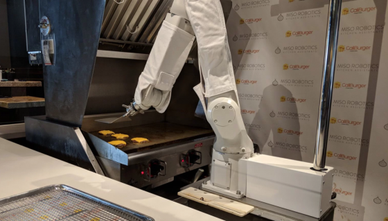
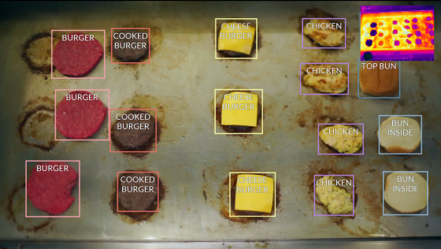

Flippy é o robô chapeiro da Miso Robotics
No início do mês, a rede de lanchonetes dos Estados Unidos CaliBurger começou a usar o robô chapeiro Flippy, desenvolvido pela Miso Robotics, para ajudar a produção de hambúrgueres. O objetivo é que o robô ficasse em uma das lojas de Pasadena, na Califórnia, para ajudar os humanos durante os momentos mais movimentados da lanchonete.{kind=link}
Flippy é o robô chapeiro da Miso Robotics

É assim que o Flippy enxerga a chapa
Porém, conforme relata o Digital Trends, o robô não ficou muito tempo no emprego - e o motivo é inusitado. Um dia depois de ser instalado, o Flippy foi deixado de lado temporariamente por ser rápido demais. Anthony Lomelino, diretor de tecnologia da rede, afirma que a empresa precisa de mais tempo para treinar os trabalhadores humanos para manter o ritmo.{kind=link}
É assim que o Flippy enxerga a chapa
“Quando você está de costas, trabalhando com pessoas, você fala um com o outro. Com o Flippy, você precisa trabalhar em torno de sua agenda e coreografar os movimentos do que você faz, quando e como você faz isso”, explica.O braço robótico de seis eixos é aparafusado ao chão da cozinha e recebe pedidos por meio de bilhetes digitais. Ele é equipado com visão térmica e os tempos de cozimento são exibidos em uma tela para ajudar os funcionários humanos a saberem quando adicionar queijo ou preparar os pães.
Assim que ele voltar ao trabalho e os funcionários sejam treinados, a rede de lanchonetes espera ter, pelo menos, 50 locais operando com o robô até o final do ano.
Fontes:
12/Mar/2018 21:01:13